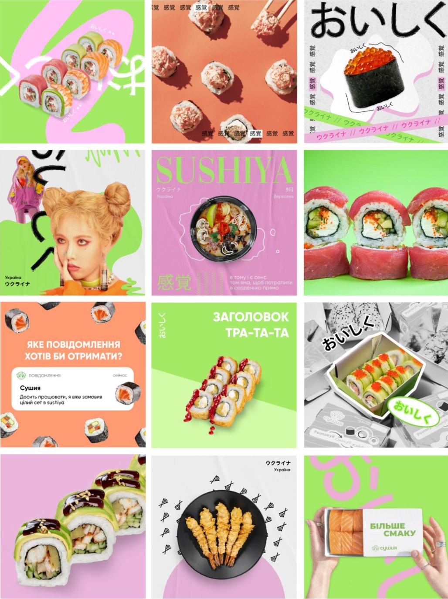

Сушія
Сушія
Завдання:
розробити креативну концепцію та дизайн-систему для Instagram облікового запису бренда Sushiya.

Наша мета полягала не в тому, щоби просто продемонструвати продукт
та асортимент у соцмережах бренда (хоча це теж, безумовно,
важливо), але в тому, щоб створювати згодом такий контент, за яким
хочеться стежити, до якого хочеться залучатися, який вимагає
зворотного зв’язку.
За допомогою облікового запису в інстаграм можна створити активне
та лояльне ком’юніті, а пости зробити віральними — саме цього
правила ми дотримуємося, розробляючи концепції для комерційних
акаунтів.
Ми подумали:
Що, якщо не просто вести акаунт, пісно розповідаючи про продукт, а зробити з інстаграм-сторінки справжнісіньке «глянцеве ЗМІ» про кращу японську кухню.
Ми вирішили створити модну, смачну, злегка скандальну та інтерактивну інста-ЗМІ, яку хочеться читати, на яку хочеться дивитися.
Сушія — модне ЗМІ про
японську кухню від а до я
Важливо: концепція та дизайн-система не мусить суперечити філософії бренда, а навпаки, популяризувати її, відрізняти від інших, привертати увагу.

У результаті вийшла не просто стильна й неординарна розкладка, але
і яскрава і зрозуміла концепція, яка дає простір фантазії і навіть
найнуднішу комерційну інформацію дає змогу подавати в незвичайній
і яскравій формі.
Так чи інакше, суші — це мистецтво. То чому б не розповісти про
них стильно?